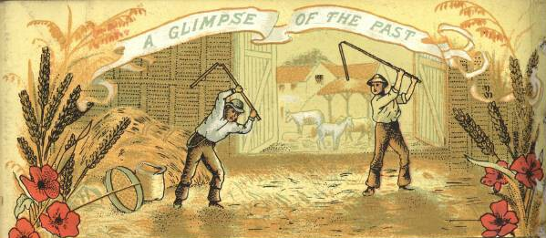

P2
Powerhound_2000
2021-06-01 14:07 UTC
#1
The fates have aligned and this is brought to you on that special Same Age Day for Christopher and Adam.
The fates have aligned and this is brought to you on that special Same Age Day for Christopher and Adam.
Eric and Tim, awesome letter, great lore. 
Also, Dil Ninja’s joke about Alpha having a love interest named Beta was funny, but would have been a complete anachronism as a punchline!
Yeah, I have no idea when those terms actually came around. Though given how patriarchal they are and how little they apply to real wolves, I always thought they were very old.
Also, knowing the actual mascot for Felicia’s college now, the contrast is pretty amusing. We could’ve gotten a giant mutant thresher shark as a villain, and instead we get a mutant squirrel mascot named Franklin, and the squirrel is way scarier to imagine.
O-oh.
The whole time, I was thinking of a similarly-named bird. >.< Though interestingly, that search led to find a team actually named the Thrashers, so that’s neat. 
And like, half the problems that were pointed out about that episode can be ameliorated through AP classes and other such things. High schools and colleges cross over all the time. :B
I kind of assumed the agricultural kind of threshers.

Also an option, but I figured “person with a flail” makes for a better guy-in-a-suit mascot.
Also a good villain-in-a-mascot-suit!